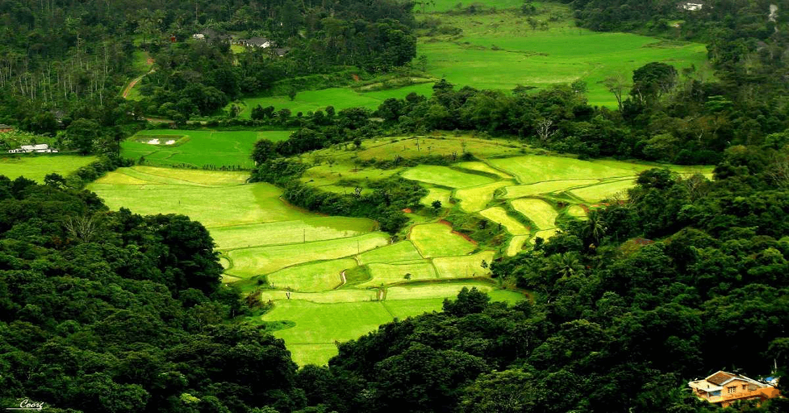

COORG TRAVELS
PHONE: 9678898856
EMAIL:coorgtourism@gmail.com

COORG
The misty hills, lush teakwood and sandalwood forests, and acres of tea and coffee plantations of Kodagu are, in a word, stunning. Also known as Coorg and dubbed "The Scotland of India," Kodagu is a postcard-perfect region of scattered villages and hamlets, which are the epitome of old-world charm. Kodagu is ideal for outdoor activities such as trekking, angling and white-water rafting, and major festivals like Keil Poldu (worship of weapons), Cauvery Shankaramana (return of the river goddess) and the Huttari (harvest) festival are a huge draw.
©Madikeri Tours